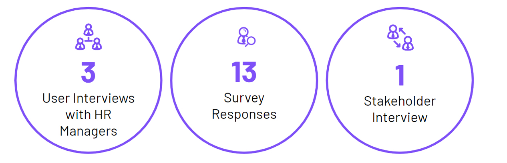
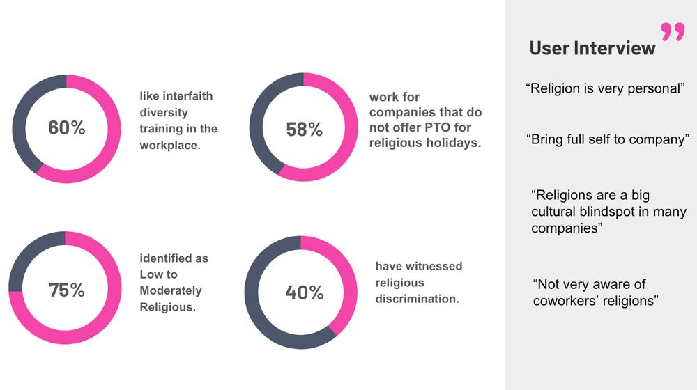
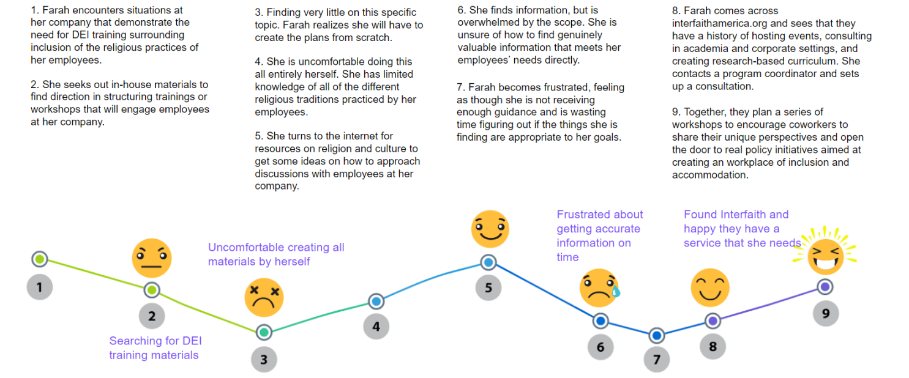
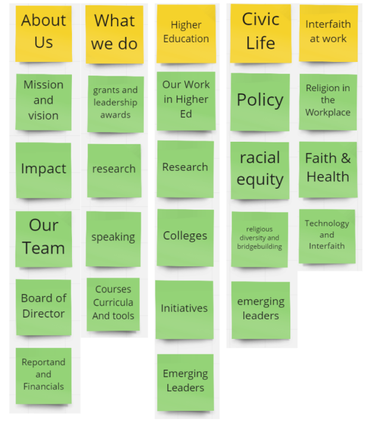
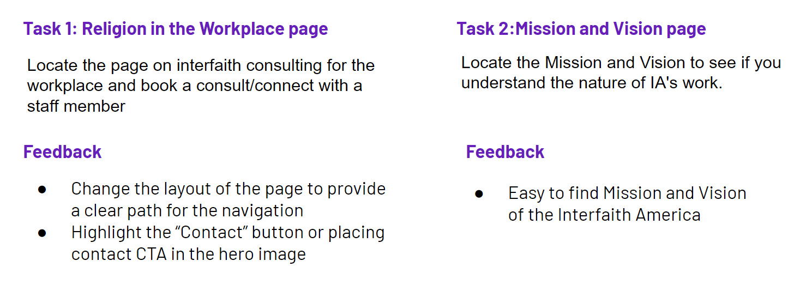
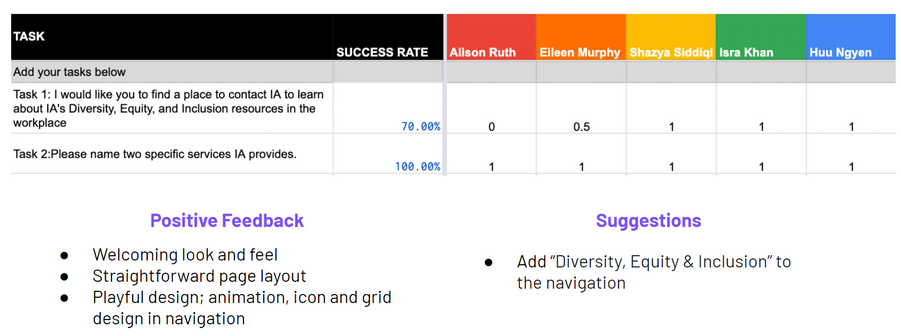

Interfaith America is a non-profit organization that promotes religious inclusion in public life while operating in higher education and civic and corporate spaces. Our goals are to bring desktop and mobile screen design solutions based on executing the user experience and user interface design process. How might we make the website easy to navigate and more actionable so HR decision-makers can find workplace Interfaith DEI training?
UX UI design
The team consist of me, two UX / UI designer
User persona, User research, Competitor analysis, Information architecture, Animated high-fidelity interactive prototype, Usability test
First, we evaluated the usability heuristic of the InterFaith America site. We then conducted three usability tests to find how easily users can identify Interfaith America’s services and obtain them. Most users did not like the mega menu because it is lightly shakable when users move to the following menu. Also, they had difficulty completing one task: finding an email and contact person to acquire the service.
During the interview with a stakeholder, we found that they usually connect with corporate partners at conferences or personal connections. They would like to highlight the corporate training on the site. So, we decided to focus our efforts on the users for Corporate Interfaith DEI Training. We want to understand how human resources decision-makers understand a variety of religious traditions and how they seek this information.
What importance/value do companies place on supporting religious diversity and practices in the workplace?
For our initial user research, we conducted one on one interview with HR professionals and a survey.
How might we make our company’s website easy to navigate and more actionable so HR decision-makers can find workplace Interfaith DEI training?
HR leaders overseeing religiously diverse employees want to feel confident, including faith in company-wide DEI efforts because they value an inclusive workplace and want all employees to feel valued and respected.
Farah wants to hold an employee forum/workshop focusing on religious inclusion in her company but does not feel comfortable creating it entirely on her own. She needs to seek an outside resource for guidance and turns to the internet for help.
Since we decided to create new navigation, we conducted 3 card sorting exercises for the website’s navigation to organize, design, and improve the site’s information architecture.
After we made the wireframe, we performed two in-person tests with two tasks to see how informative and accessible the site was for our users. The key findings of the user tests were that we need to change the page layout to provide a clear path for the navigation and highlight the “Contact” button or place contact CTA in the hero section. Also, we decided to create two essential screens, landing, and Interfaith Religion at work screen, concerning our user flow.
After going through 5 high-fidelity usability tests, we iterated the second item of the Interfaith at work to Diversity, Equity, and Inclusion.
